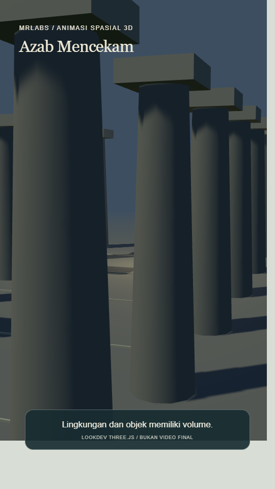
LATAR 01 / THREE.JS 3D
Azab Mencekam
Ruang gelap, kabut tipis, arsitektur batu dan cahaya terarah.
Ruang batu dengan cahaya terarah • Lorong gelap berkabut • Ambang ruang dengan bayangan panjang
Buka lingkungan 3DObjek bervolume dalam satu dunia: perspektif, kedalaman, material dan bayangan. Pilih per adegan sesuai naskah, dengan kesinambungan lokasi dan kamera. Tanpa wajah, musik atau B-roll.

Ruang gelap, kabut tipis, arsitektur batu dan cahaya terarah.
Ruang batu dengan cahaya terarah • Lorong gelap berkabut • Ambang ruang dengan bayangan panjang
Buka lingkungan 3D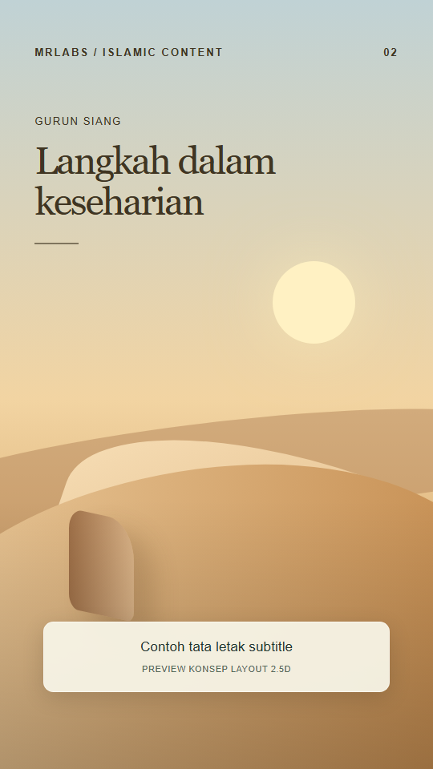
Pasir berlapis, langit siang dan batu hangat tanpa figur.
Bukit pasir siang • Jalur batu pagi • Tepi oasis generik sore
Buka lingkungan 3D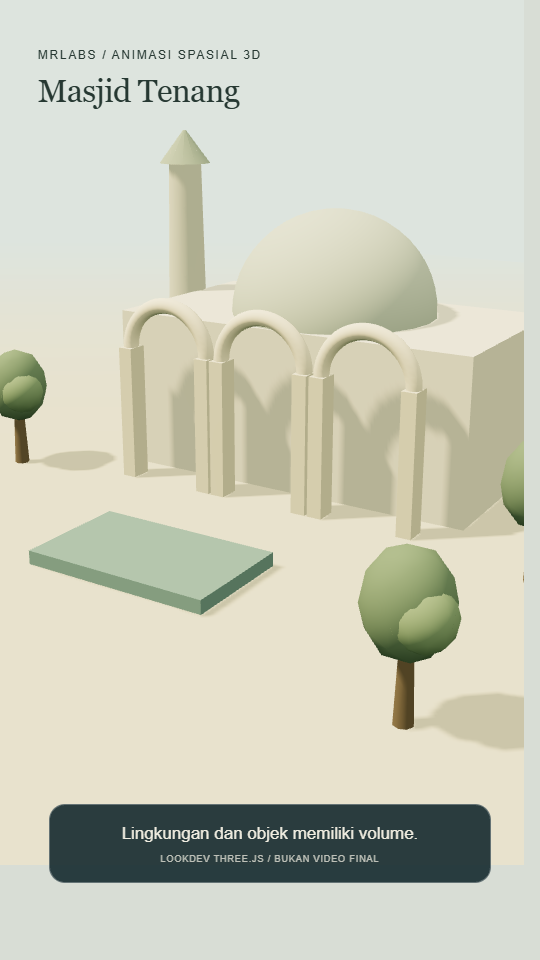
Lengkung arsitektur, halaman teduh dan sinar siang lembut.
Halaman masjid pagi • Lengkung interior siang • Serambi teduh sore
Buka lingkungan 3D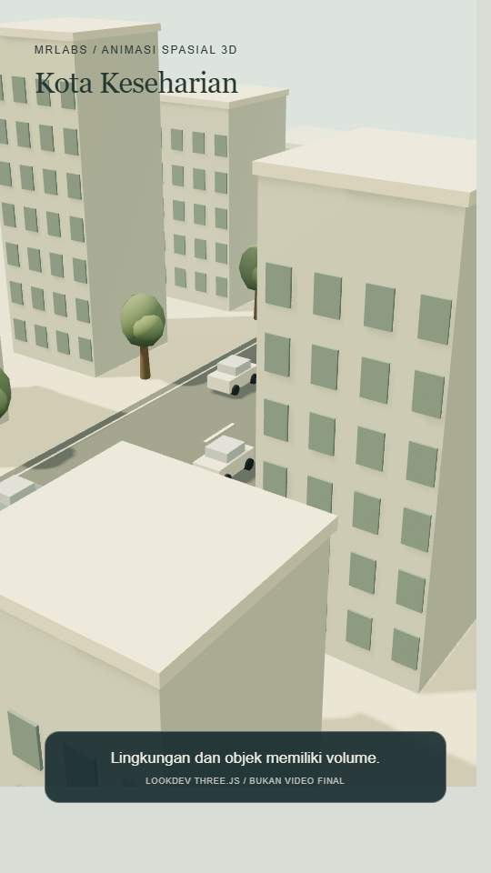
Bangunan kota dan material keseharian dalam cahaya pagi.
Trotoar kota pagi • Koridor gedung siang • Teras bangunan sore
Buka lingkungan 3D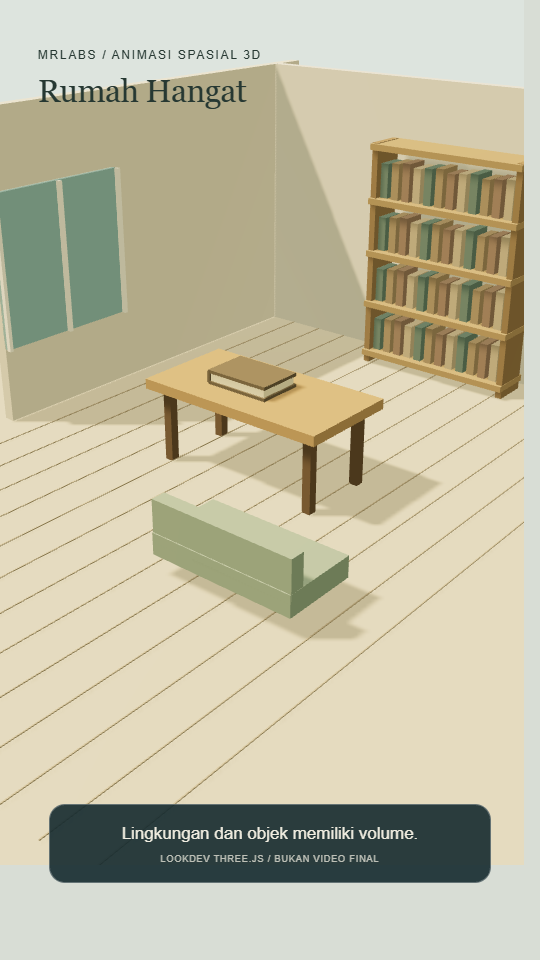
Jendela, cahaya hangat, meja dan benda rumah yang relevan.
Ruang keluarga pagi • Sudut meja sore • Ambang pintu malam
Buka lingkungan 3D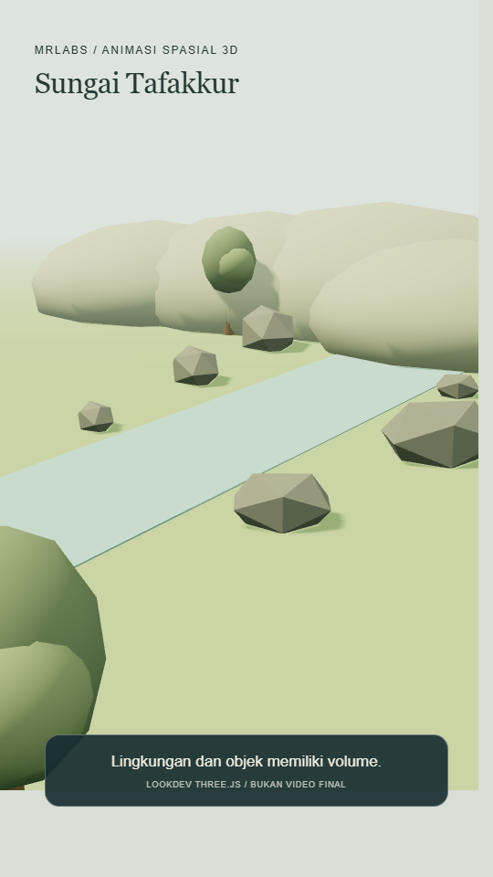
Aliran sungai dan lapisan alam yang tenang, tanpa fauna berwajah.
Tepi sungai pagi • Batu dan aliran siang • Kelokan sungai sore
Buka lingkungan 3D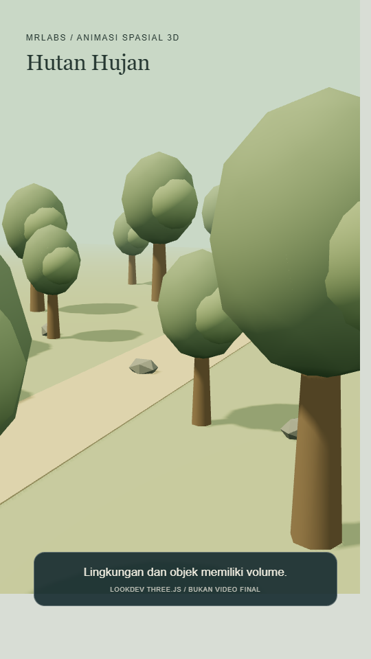
Pepohonan berlapis, tanah basah dan sinar menembus kanopi.
Kanopi pagi berkabut • Jalur tanah setelah hujan • Tepi hutan cahaya sore
Buka lingkungan 3D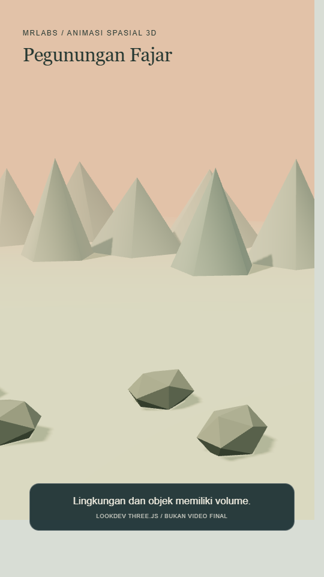
Punggung gunung berlapis, lembah berkabut dan cahaya fajar.
Fajar dari tepian batu • Lembah siang berawan • Punggung bukit senja
Buka lingkungan 3D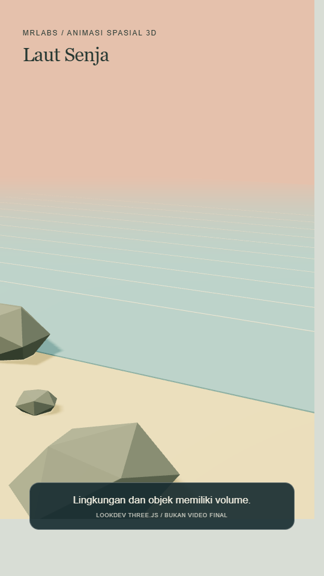
Pantai terbuka, horizon laut dan cahaya senja yang tenang.
Garis air senja • Batu pantai pagi • Horizon laut berawan
Buka lingkungan 3D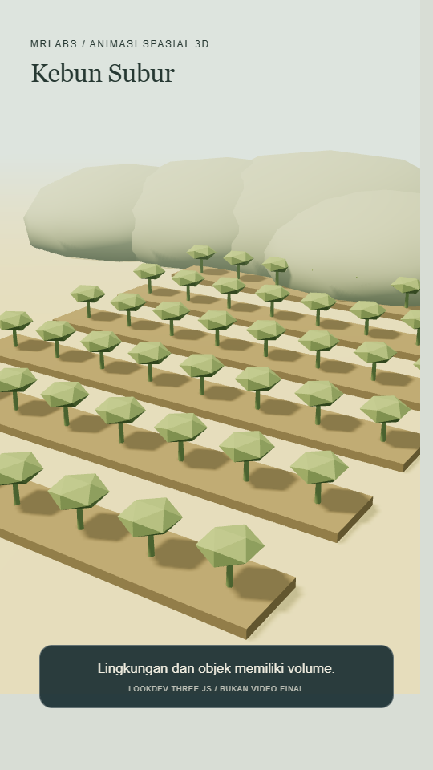
Petak tanaman dan jalur kebun dengan tanah serta dedaunan tanpa fauna.
Petak bibit pagi • Jalur kebun siang • Daun basah setelah hujan
Buka lingkungan 3D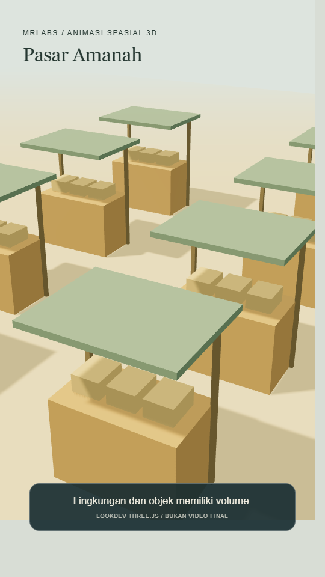
Kios tanpa figur, timbangan dan peti barang generik tanpa merek.
Meja timbangan pagi • Lorong kios siang • Peti barang menjelang tutup
Buka lingkungan 3D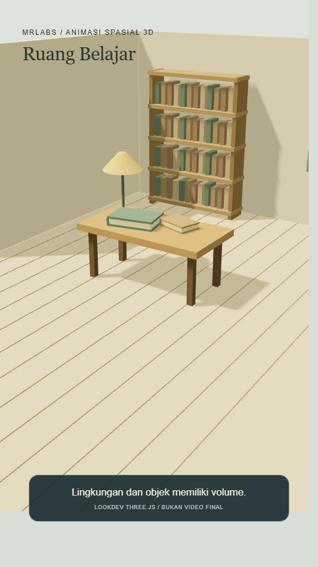
Meja belajar, lampu dan buku tanpa teks/ilustrasi wajah yang ditanam.
Meja dekat jendela pagi • Lampu belajar malam • Sudut papan diagram siang
Buka lingkungan 3D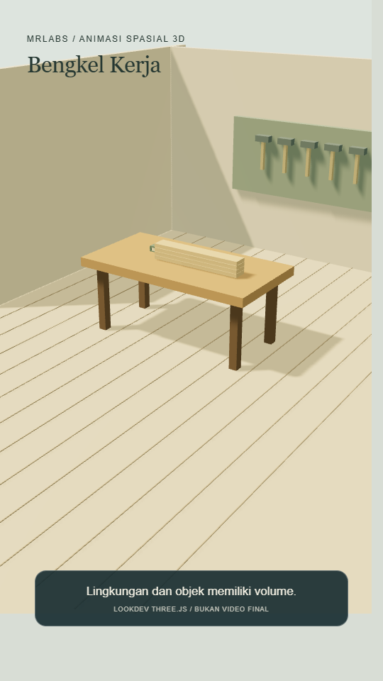
Meja kerja, alat generik dan material kayu/logam tanpa figur.
Meja kayu cahaya pagi • Rak alat siang • Detail pekerjaan sore
Buka lingkungan 3D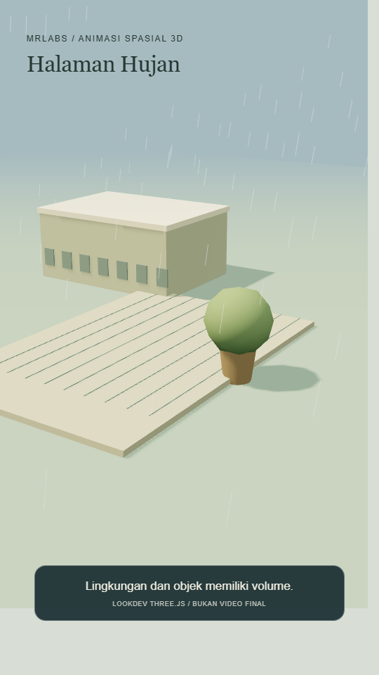
Halaman rumah, kusen pintu dan permukaan basah saat hujan lembut.
Ambang pintu gerimis • Genangan setelah hujan • Taman rumah mendung
Buka lingkungan 3D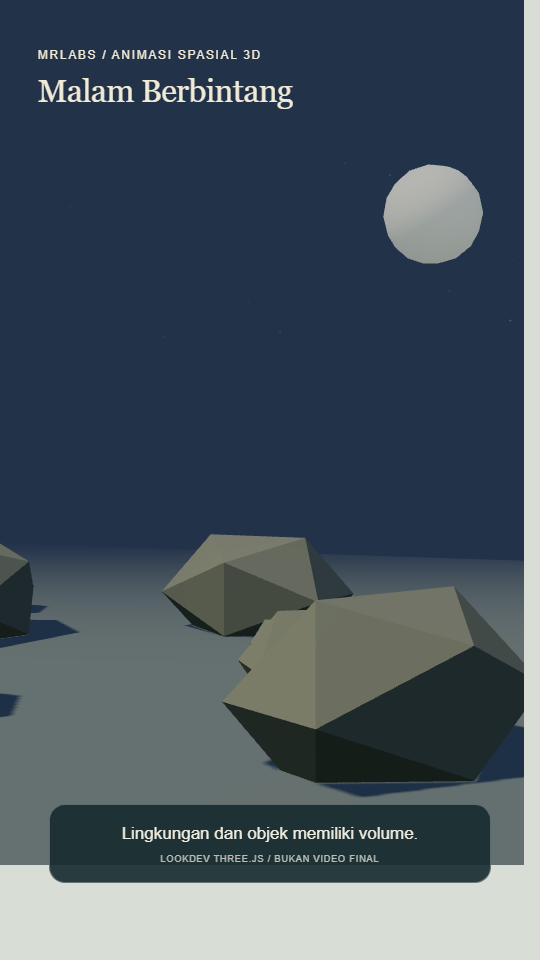
Langit berbintang, horizon bukit dan ruang malam tanpa simbol kesakralan.
Langit malam terbuka • Horizon sebelum fajar • Bukit malam berawan tipis
Buka lingkungan 3D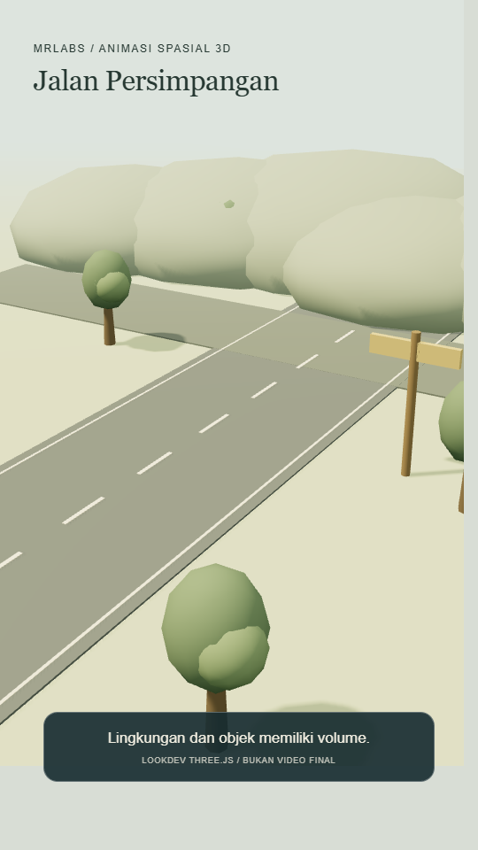
Jalan bercabang dan objek penunjuk editable sebagai metafora pilihan.
Persimpangan pagi • Jalan setapak mendung • Tepi jalan sore
Buka lingkungan 3D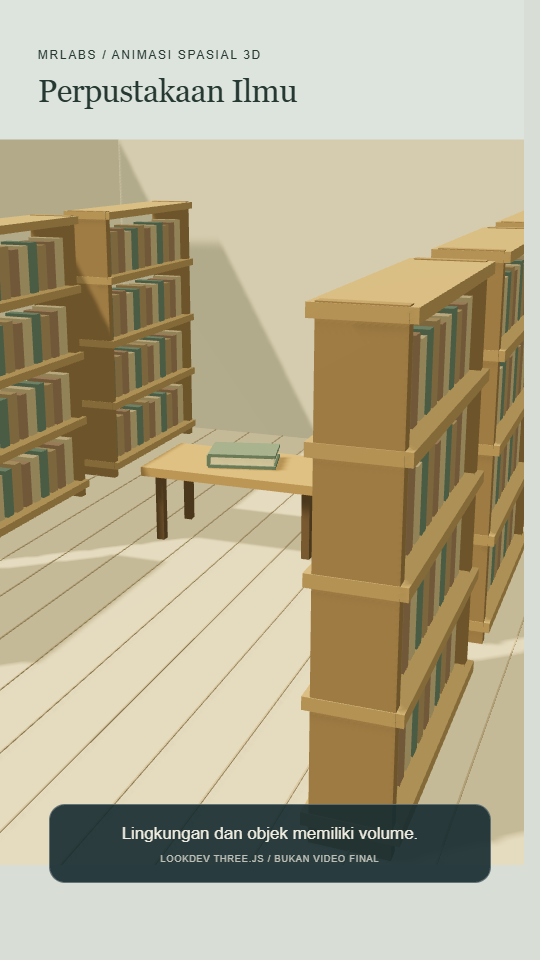
Lorong rak, buku polos dan ruang baca generik tanpa klaim lokasi sejarah.
Lorong rak cahaya pagi • Meja baca siang • Rak dekat lampu malam
Buka lingkungan 3D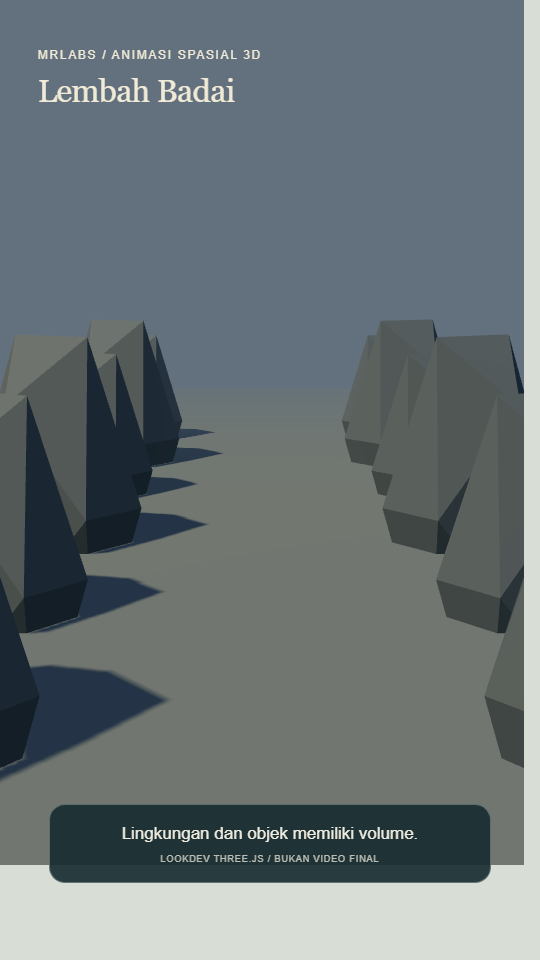
Batu lembah, langit berat dan gerak kabut tanpa rincian gaib rekaan.
Lembah awan berat • Tebing berkabut • Batu basah seusai badai
Buka lingkungan 3D